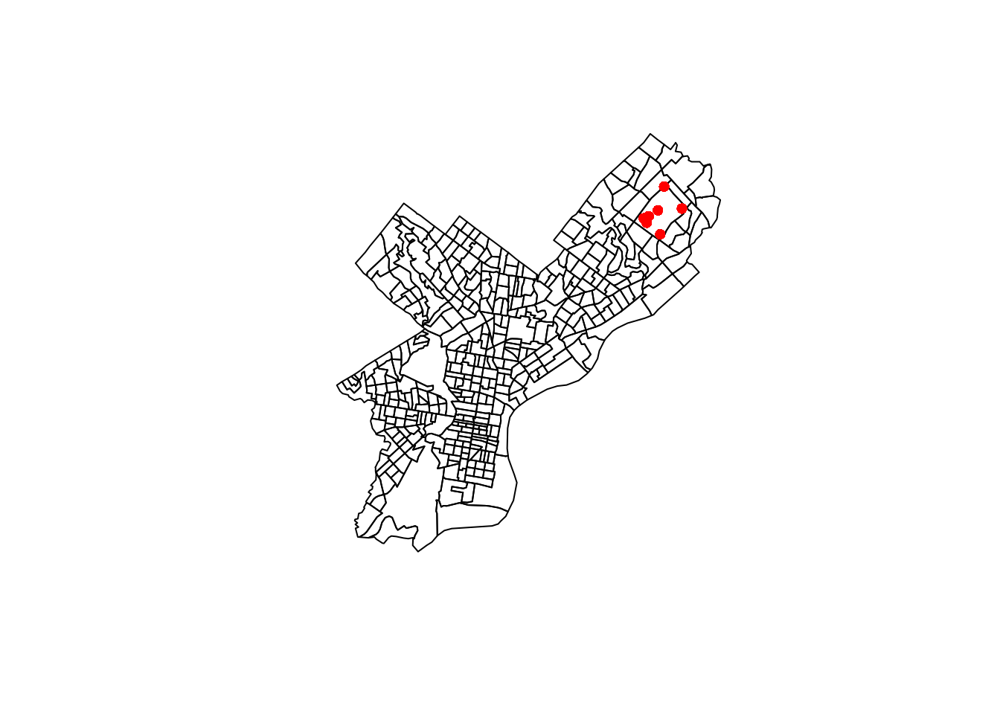

A student in one of my classes had a bunch of latitude/longitude data from the US and wanted to map them to FIPS codes, which are codes used to identify individual counties in the US.
Let’s first generate some fake data from Pennsylvania. We use the us_counties
function from USAboundaries to get
sf shapefiles of the counties.
library(sf)
library(dplyr)
library(tigris)
library(USAboundaries)
county_maps <- us_counties(resolution = "high", states = "PA")
n <- 1e5
set.seed(7477263)
county_bbox <- st_bbox(county_maps)
# randomly sample longitude and latitude from PA's bounding box
latlong_dat <- data.frame(id = seq_len(n),
x = rnorm(n),
Longitude = runif(n, min = county_bbox["xmin"],
max = county_bbox["xmax"]),
Latitude = runif(n, min = county_bbox["ymin"],
max = county_bbox["ymax"]))The original solution was to use call_geolocator_latlong to get the census
tract using an online API, and then convert the census tract into county.
However, the API takes a while to respond, so this solution isn’t scalable
for thousands of data points.
system.time({
tigris::call_geolocator_latlon(lat = latlong_dat$Latitude[1],
lon = latlong_dat$Longitude[1])
})## user system elapsed
## 0.065 0.004 0.533We will use the st_intersects function from the sf library and the
county-level sf shapefiles to find in which county a given lat/long pair is
contained. To do that, we convert the latitude and longitude data into an sf
object. Note that if you have NA values for the latitude or longitude, you’ll
need to filter them out.
latlong_sf <- latlong_dat %>%
filter(!is.na(Latitude), !is.na(Longitude)) %>%
st_as_sf(coords = c("Longitude", "Latitude"), crs = st_crs(county_maps))Then, we use the st_intersects function to find the counties which intersect
with the points. This returns a list, where the ith element is the row number of
county_maps which contains the ith lat/long pair.
We might get a message like:
although coordinates are longitude/latitude, st_intersects assumes that they are planarI believe this can be ignored unless you’re working with data near the polar regions.
system.time({
intersected <- st_intersects(latlong_sf, county_maps)
})## user system elapsed
## 0.761 0.021 0.782We can see that this runs super quickly—it took the same time to process
all 10K lat/long pairs with st_intersects as it did to process 1 pair with
call_geolocator_latlon.
We can then add the FIPS as a column to our latitude/longitude data. We can
use the intersection to subset the geoid column of county_maps, which
is the FIPS code. If the intersection was NA, then the FIPS code will be an
empty string (note FIPS codes are stored as strings because sometimes they have
a leading zero).
latlong_final <- latlong_sf %>%
mutate(intersection = as.integer(intersected),
fips = if_else(is.na(intersection), "",
county_maps$geoid[intersection]))
head(latlong_final)## Simple feature collection with 6 features and 4 fields
## geometry type: POINT
## dimension: XY
## bbox: xmin: -80.48101 ymin: 39.73635 xmax: -75.50156 ymax: 41.99468
## geographic CRS: WGS 84
## id x geometry intersection fips
## 1 1 -2.1932479 POINT (-77.89334 40.52967) 5 42061
## 2 2 -2.0290433 POINT (-78.81608 41.8673) 44 42083
## 3 3 0.3157029 POINT (-75.50156 39.73635) NA
## 4 4 -1.0549416 POINT (-80.48101 40.59035) 38 42007
## 5 5 0.9947392 POINT (-78.55342 41.54438) 41 42047
## 6 6 1.2926765 POINT (-79.69076 41.99468) 17 42049To check our solution, we can draw a plot of all the lat/long pairs from a specific PA county.
county_maps %>%
select(geometry) %>%
plot()
latlong_final %>%
filter(fips == "42019") %>%
select(geometry) %>%
slice_sample(n = 10) %>%
plot(add = TRUE, reset = FALSE, pch = 16, col = "red")